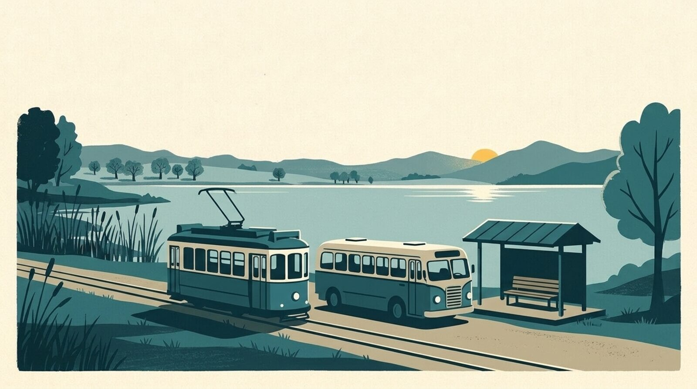

In breve
Per 203 spiagge svizzere del Lemano ecco la fermata di trasporto pubblico più vicina e la sua distanza in linea d’aria. I dati non dicono se sia una stazione, una fermata dell’autobus o un imbarcadero: controllate linea e orario prima di partire.
Ogni riga dà la spiaggia, poi la fermata più vicina e la sua distanza in metri, in linea d’aria: il percorso a piedi è un po’ più lungo.
Entro 200 m
- Walchwil – Lido : Walchwil, Lido (11 m)
- Oberwil – Trubikon : Oberwil b. Zug, Räbmatt (17 m)
- Paradiso – Conca d’Oro : Paradiso, Piscina (22 m)
- Boniswil : Boniswil (See) (23 m)
- Meggen – Benzeholz : Meggen, Fischerdörfli (30 m)
- Nyon : Nyon, plage (33 m)
- Lugano – Riva Caccia : Lugano, Malpensata (43 m)
- Bauen : Bauen, Dorf (46 m)
- Neuhaus (Unterseen) : Neuhaus (Unterseen) (See) (47 m)
- Walchwil : Walchwil, St. Adrian (48 m)
- Cham – Hirsgarten : Cham (See) (50 m)
- Buonas : Buonas (See) (53 m)
- Saint-Saphorin : St-Saphorin (Lavaux), gare (56 m)
- Brunnen : Brunnen, Schiller (64 m)
- Hünibach : Ländte Hünibach (64 m)
- Gersau – Kindli : Gersau, Kindli-Strandbad (65 m)
- Kilchberg : Kilchberg ZH, Schooren (67 m)
- Brissago : Brissago, Piazza del Sole (71 m)
- Lido Locarno : Locarno, Lido (74 m)
- Lucerne – Seebad : Luzern, Casino-Palace (75 m)
- Arth : Arth, Aazopf (76 m)
- Tüscherz : Tüscherz, Dorfweg (81 m)
- Strandbad Hirschen : Gunten, Dorf (81 m)
- Zollikon : Zollikon (83 m)
- Vevey : Vevey (84 m)
- Hergiswil : Hergiswil NW, Badi (88 m)
- Zoug – Seeliken : Zug, Theater Casino (88 m)
- Capolago : Capolago, Posta (90 m)
- Bäch : Bäch SZ, Badi (90 m)
- Cudrefin : Cudrefin (99 m)
- Oberwil – Tellenörtli : Oberwil b. Zug, Kreuz (100 m)
- Merlischachen : Merlischachen (See) (102 m)
- Erlenbach : Winkel am Zürichsee, Bahnhof (103 m)
- Villeneuve : Villeneuve VD, La Plage (104 m)
- Corseaux : Vevey, Corseaux-plage (110 m)
- Gerra (Gambarogno) : Gerra (Gambarogno), Stazione (119 m)
- Spiez : Spiez, Rütti (123 m)
- Rüschlikon : Rüschlikon, Schlossstrasse (125 m)
- Oberägeri : Oberägeri, Station (126 m)
- Zoug – Strandbad : Zug, Letzi (126 m)
- Wädenswil – Rietliau : Au ZH, Strandbad (130 m)
- Anières : Anières (lac) (131 m)
- Bissone : Bissone, autostrada (132 m)
- Meilen : Meilen, Beugen (135 m)
- Bienne – Plage : Biel/Bienne (Schiff/bateau) (138 m)
- Riva San Vitale : Riva S. Vitale, Scuola Media (139 m)
- Morat : Murten, Schwimmbad (141 m)
- Leissigen : Leissigen (See) (144 m)
- Gelfingen : Gelfingen (146 m)
- Zurich – Seebad Utoquai : Zürich, Kreuzstrasse (147 m)
- Tropical Corner : Cologny, Righi (150 m)
- Baby-Plage : Genève-Eaux-Vives (lac) (150 m)
- Uetikon am See : Uetikon am See, Bahnhof (154 m)
- Lido di Lugano : Cassarate, Lido (159 m)
- Brienz : Brienz BE, Lammbach (162 m)
- Niederried : Niederried (165 m)
- Cologny : Cologny, Montalègre (167 m)
- Saint-Aubin : St-Aubin NE (bateau) (168 m)
- Cham : Cham, Eich (169 m)
- Pfäffikon SZ : Pfäffikon SZ (See) (170 m)
- Domaine des Îles : Sion, Tennis Iles (172 m)
- Zurich – Strandbad Mythenquai : Zürich, Sukkulentensammlung (173 m)
- Lausanne – Vidy : Lausanne, Parc Bourget (176 m)
- Concise : Concise (bateau) (177 m)
- Zurich – Strandbad Wollishofen : Zürich, Seerose (178 m)
- Montreux – Clarens : Clarens, centre (180 m)
- Beckenried : Beckenried, Hungacher (183 m)
- Zoug – Männerbadi : Zug, Schützenmatt (184 m)
- Zurich – Seebad Enge : Zürich, Rentenanstalt (186 m)
- Plage des Eaux-Vives : Genève, Parc et Plage des Eaux-Vives (187 m)
- Lutry : Lutry, Corniche (187 m)
- Feldmeilen : Meilen, Schulhaus Feld (187 m)
- Strandbad Cholplatz : Gersau, Felsenegg (188 m)
- Meisterschwanden : Meisterschwanden Seerose (188 m)
- Eich : Eich, Dorf (188 m)
- Veytaux : Veytaux-Chillon (190 m)
- Küsnacht : Küsnacht ZH Heslibach (191 m)
- La Tour-de-Peilz : La Tour-de-Peilz, centre (192 m)
- Locarno – Bagno pubblico : Locarno, Delta Maggia (195 m)
- Yverdon-les-Bains : Yverdon-les-Bains, plage (198 m)
Da 200 a 500 m
- Beinwil am See : Beinwil am See (See) (200 m)
- Genthod : Creux-de-Genthod, gare (205 m)
- Mannenbach : Mannenbach (See) (207 m)
- Hünenberg : Hünenberg Chämleten (214 m)
- Le Pont : Le Pont, église (215 m)
- Rapperswil : Rapperswil SG (See) (215 m)
- Paudex : Paudex, Verrière (216 m)
- Immensee : Immensee (216 m)
- Lausanne – Ouchy : Lausanne, Ouchy-Olympique (218 m)
- Faoug : Faoug débarcadère (218 m)
- Estavayer – Nouvelle Plage : Estavayer-le-Lac, plage (219 m)
- Zurich – Strandbad Tiefenbrunnen : Zürich, Wildbachstrasse (223 m)
- Stansstad : Stansstad, Schule (223 m)
- Lucerne – Tribschen : Tribschen (226 m)
- Cortaillod : Cortaillod (bateau) (227 m)
- Silvaplana : Silvaplana, Camping (227 m)
- Greppen : Greppen (229 m)
- Hermance : Hermance (lac) (234 m)
- Bönigen : Bönigen (240 m)
- Bains des Pâquis : Genève, Bains des Pâquis (244 m)
- Melano : Melano, Posta (245 m)
- Altnau : Altnau (245 m)
- La Neuveville : La Neuveville, Ruis de Vaux (247 m)
- Zoug – Brüggli : Zug, Lorzen (247 m)
- Oberrieden : Oberrieden (See) (248 m)
- Cerlier (Erlach) : Erlach (Schiff) (250 m)
- Hauterive : Hauterive NE, Port (251 m)
- Wilen – Wilerbädli : Wilen (Sarnen), Wilerbad (252 m)
- Baldegg : Baldegg (254 m)
- Melide : Melide, Stazione (255 m)
- Faulensee : Faulensee, Angernstrasse (256 m)
- Saint-Prex : St-Prex, gare sud (261 m)
- Uster : Uster, See (261 m)
- Lucerne – Lido : Verkehrshaus-Lido (268 m)
- Richterswil : Richterswil, Wisli (270 m)
- Thalwil : Thalwil, Rainstrasse (272 m)
- Sempach : Sempach Stadt, Vogelwarte (272 m)
- Horw – Seebad : Horw, Seefeld (276 m)
- Pully : Pully, Vignes (282 m)
- Neuchâtel – Jeunes-Rives : Neuchâtel, Université (287 m)
- Ermatingen : Ermatingen, Friedhof (288 m)
- Genève-Plage : Genève, Plage (289 m)
- Caslano : Caslano (lago) (290 m)
- Rolle : Mont-sur-Rolle, Bellefontaine (292 m)
- Castagnola – San Domenico : Castagnola, Roncaccio (292 m)
- Cully – Moratel : Epesses, gare (297 m)
- Buochs-Ennetbürgen : Ennetbürgen, Strandbad (305 m)
- Triboltingen : Triboltingen (310 m)
- Münsterlingen : Scherzingen, Scheidweg (316 m)
- Villette : Villette VD (317 m)
- Thoune – Strandbad : Thun, Strandbad (318 m)
- Lucerne – Ufschötti : Luzern, Bahnhof (319 m)
- Colombier : Colombier NE, Bas-des-Allées (323 m)
- Altenrhein : Altenrhein, Dorf (324 m)
- Lausanne – Bellerive : Lausanne, Bellerive (329 m)
- Steinach : Steinach, Kirche (330 m)
- Buchillon : Buchillon, collège (352 m)
- Pregny-Chambésy : Chambésy, Plage du Vengeron (356 m)
- Rivaz : Rivaz, gare (358 m)
- Tennwil : Tennwil, Strandbad (360 m)
- Romanshorn : Romanshorn, Blumenweg (361 m)
- Horn : Horn (366 m)
- Krattigen – Lido : Krattigen, Tschuppen (367 m)
- Saint-Sulpice : St-Sulpice VD, Pâqueret (373 m)
- Versoix : Versoix, Port Choiseul (391 m)
- Les Brenets : Les Brenets, centre village (397 m)
- Vitznau – Lido : Vitznau, Unteraltdorf (398 m)
- Morges : Morges, ch. du Bochet (400 m)
- Lugano – Parco Ciani : Lugano, Palazzo Studi (406 m)
- Kesswil : Kesswil (409 m)
- Corbières : Hauteville, Les Fourches (416 m)
- Nottwil : Nottwil (418 m)
- Tenero – Lido Mappo : Minusio, Lido Mappo (419 m)
- Schenkon : Schenkon, Dorf (430 m)
- Maroggia : Maroggia-Melano, Stazione (433 m)
- Gletterens : Gletterens, lac (434 m)
- Portalban : Portalban (442 m)
- Préverenges : Préverenges, village (452 m)
- Mies : Tannay (455 m)
- Pont-la-Ville : Pont-la-Ville, Sur-Momont (468 m)
- Gland : Gland, La Falaise (471 m)
- Badewiese Funtelen : Tüscherz, Alfermée (472 m)
- Bellevue : Creux-de-Genthod, gare (475 m)
- Nidau : Nidau, Strandweg (475 m)
- Avenches : Avenches, plage (477 m)
- Agno : Agno, Stazione (481 m)
- Strandbad Rostele : Twann (Schiff) (499 m)
Oltre 500 m
- Dully : Gland, Lignière-Dullive (502 m)
- Egnach – Wiedehorn : Egnach, Wiedehorn (506 m)
- Magliaso : Magliaso Paese (508 m)
- Greifensee – Furren : Greifensee, Städtli (510 m)
- Salavaux : Salavaux, école (526 m)
- Uttwil : Uttwil, Bahnhof (539 m)
- Landschlacht : Landschlacht (542 m)
- Güttingen : Güttingen (546 m)
- Tenero : Tenero, Brere (575 m)
- La Roche : La Roche FR, Villaret (580 m)
- Corsier-Port : Corsier GE (lac) (592 m)
- Le Bouveret : Bouveret (604 m)
- Sarnen : Sachseln, Brünigstrasse (615 m)
- Maur : Maur, See (619 m)
- Morlon : Morlon, Eglise (629 m)
- Forel : Forel FR, village (630 m)
- Perroy : Perroy, Couronnette (632 m)
- Le Sentier – Le Rocheray : Le Rocheray, bif. gare (637 m)
- Céligny : Céligny (lac) (639 m)
- Coppet : Coppet (lac) (645 m)
- Iseltwald : Iseltwald, Dorfplatz (650 m)
- Arbon : Arbon Seemoosriet (664 m)
- Gumefens : Gumefens, lac (698 m)
- Prangins : Prangins, hôpital (702 m)
- Berlingen : Berlingen (795 m)
- Horw – Winkel : Horw, Rank (807 m)
- Ascona : Ascona, Via Pancaldi Mola (838 m)
- Saint-Gingolph : St-Gingolph (Suisse) (844 m)
- Tolochenaz : Tolochenaz, Les Noyers (896 m)
- Boudry : Cortaillod, Câbles (903 m)
- Risch – Zweiern : Buonas (See) (925 m)
- Yvonand : Yvonand, Grand'Rue (932 m)
- Collonge-Bellerive – La Savonnière : Collonge-Bellerive, Pré-d'Orsat (972 m)
- Grandson – Corcelettes : Grandson, Corcelettes (1023 m)
- Allaman : Féchy, En Burnens (1073 m)
- Lac de Bret : Puidoux, En Botonnet (1251 m)
Cosa questa pagina non dice
Non dice quale linea serve ogni fermata, con che frequenza, né se la fermata è una stazione, una fermata dell’autobus o un imbarcadero: la fonte non lo precisa. Le spiagge della riva francese non sono coperte, perché la fonte riguarda solo la Svizzera. Le distanze sono misurate dal punto della spiaggia nell’app.
Per scegliere la spiaggia: l’app Il mio lago dà acqua e vento del momento. Altre guide: Losanna e Morges, la Riviera, La Côte, Ginevra.
L’acqua del lago in questo momento
La temperatura dell’acqua di ogni spiaggia è nell’app Il mio lago, aggiornata ogni tre ore.